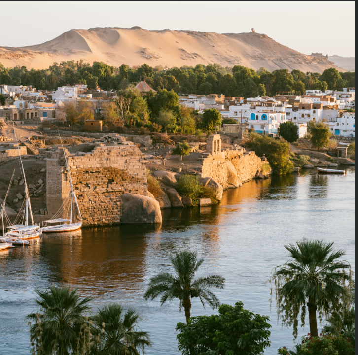
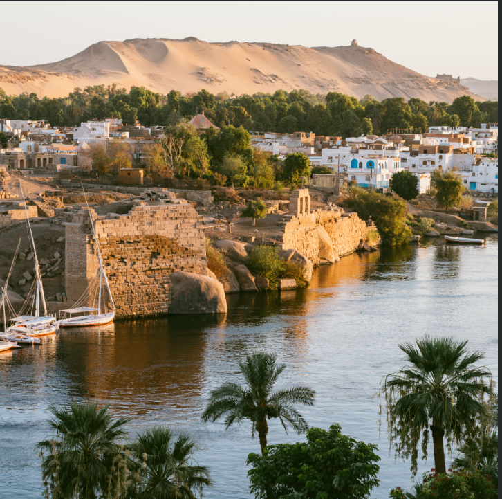
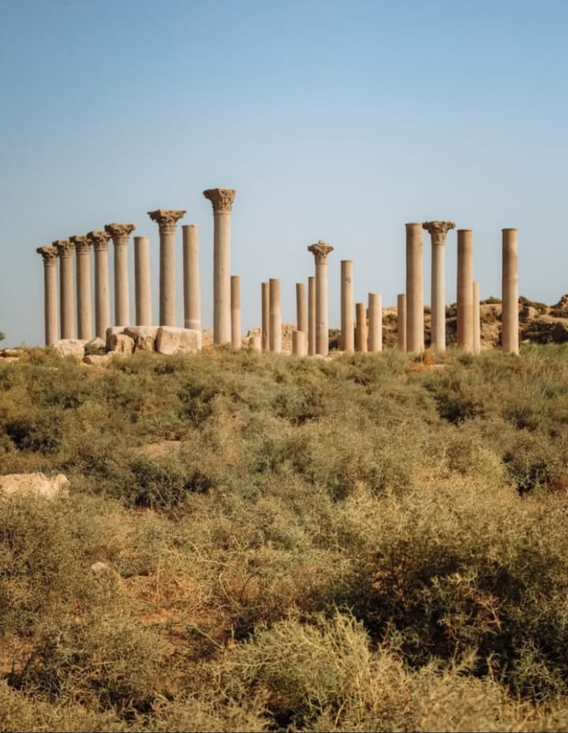
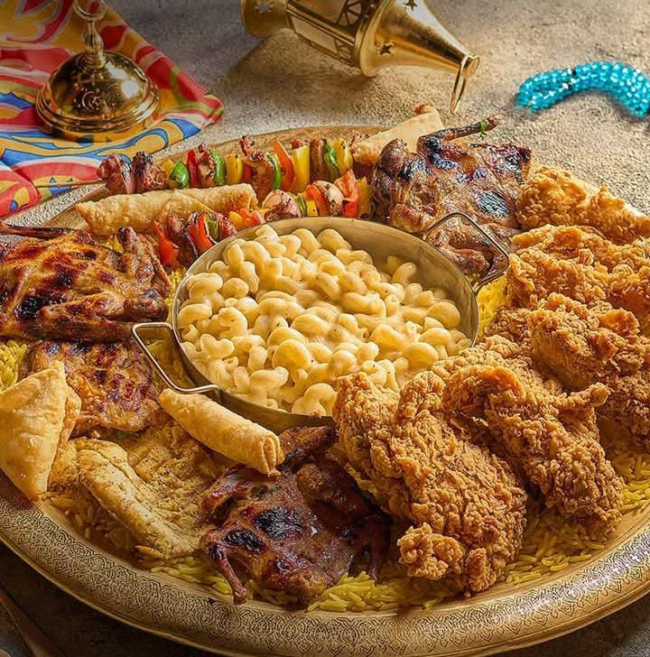

The Natural Beauty of Minya
Minya is a stunning city nestled along the banks of the Nile River. Surrounded by lush green fields and majestic mountains, it offers breathtaking views and a serene atmosphere for visitors and locals alike.
Discover the beauty, culture, and culinary traditions of this enchanting city along the Nile.
Minya is a stunning city nestled along the banks of the Nile River. Surrounded by lush green fields and majestic mountains, it offers breathtaking views and a serene atmosphere for visitors and locals alike.
Minya is known for its rich cultural heritage and the refined taste of its people. From traditional handicrafts to vibrant festivals, the city is a hub of artistic expression and community spirit.
The culinary traditions in Minya are as diverse as its landscapes. From authentic Egyptian dishes to contemporary international cuisine, the city's dining scene is sure to delight every food enthusiast.
